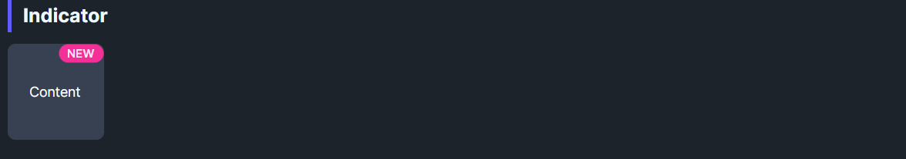

DaisyIndicator overlays a marker on top of any content (icon, button, card, avatar). You provide the main content as a child and a Marker slot for the overlay element. The marker can be any control—commonly a DaisyBadge, but also a colored dot, image, or custom element. Use it for notification counts, status indicators, or promotional labels.
| Property | Description |
|---|---|
Marker |
The overlay content. Can be any control: DaisyBadge, Border, Image, etc. Hidden when null. |
MarkerPosition |
Where the marker appears. Enum: TopLeft, TopCenter, TopRight, CenterLeft, Center, CenterRight, BottomLeft, BottomCenter, BottomRight. Default: TopRight. |
MarkerAlignment |
How the marker aligns to the corner. Enum: Inside (fully inside content bounds), Edge (straddles the corner, half in/half out), Outside (mostly outside). Default: Inside. |
<!-- Card with "NEW" label in top-right corner (inside) -->
<controls:DaisyIndicator MarkerPosition="TopRight" MarkerAlignment="Inside">
<controls:DaisyIndicator.Marker>
<controls:DaisyBadge Content="NEW" Variant="Warning" />
</controls:DaisyIndicator.Marker>
<controls:DaisyCard MinWidth="160" MinHeight="80" />
</controls:DaisyIndicator>
<!-- Button with notification count (on the edge) -->
<controls:DaisyIndicator MarkerPosition="TopRight" MarkerAlignment="Edge">
<controls:DaisyIndicator.Marker>
<controls:DaisyBadge Content="9+" Variant="Error" Size="ExtraSmall" />
</controls:DaisyIndicator.Marker>
<controls:DaisyButton IconSymbol="Message" Variant="Secondary" />
</controls:DaisyIndicator>
<!-- Avatar with online status dot -->
<controls:DaisyIndicator MarkerPosition="BottomRight" MarkerAlignment="Edge">
<controls:DaisyIndicator.Marker>
<!-- Include Width, Height, MinWidth, MinHeight for precise sizing -->
<controls:DaisyBadge Variant="Success" CornerRadius="6" Padding="0"
Width="12" Height="12" MinWidth="12" MinHeight="12" />
</controls:DaisyIndicator.Marker>
<controls:DaisyAvatar Initials="JD" Size="Large" />
</controls:DaisyIndicator>
<!-- Card with "SALE" in top-left corner -->
<controls:DaisyIndicator MarkerPosition="TopLeft" MarkerAlignment="Inside">
<controls:DaisyIndicator.Marker>
<controls:DaisyBadge Content="SALE" Variant="Error" />
</controls:DaisyIndicator.Marker>
<controls:DaisyCard MinWidth="160" MinHeight="80" />
</controls:DaisyIndicator>| Alignment | Behavior | Best For |
|---|---|---|
Inside |
Marker sits within content bounds (3px inset from edge) | Product labels (NEW, SALE) on cards |
Edge |
Marker straddles the corner (half in, half out) | Notification counts, status dots |
Outside |
Marker sits mostly outside, touching corner | Floating action indicators |
Marker property accepts any control, not just DaisyBadge. Use a Border for simple dots, an Image for icons, etc.DaisyBadge with explicit Width, Height, MinWidth, MinHeight, and CornerRadius values (set CornerRadius to half of Width/Height for a circle).Inside alignment applies a 3px inset from the content edge to prevent clipping due to anti-aliasing.Edge alignment often looks better than Inside since the dot sits on the circular avatar's edge.